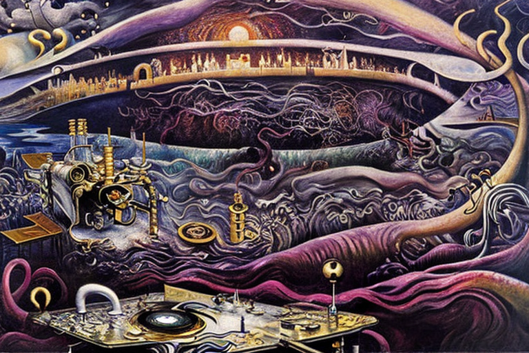
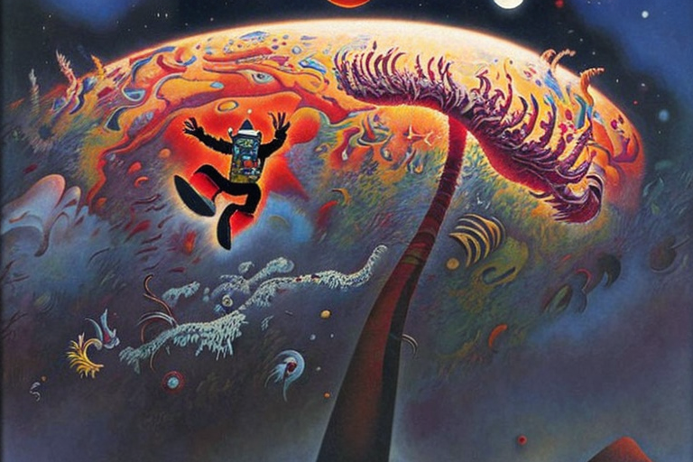

The rock, the gravitational waves and the earth
HOME
Table of Contents
The Turmoil of the World

Goo goo ga ga, lemme tell you a scary story, kiddos. The earth was all peaceful and quiet, like a big ol’ diapered baby takin’ a nap. But then, a rock of heavy metal started fallin’ from the sky, all boom boom pow, like the drums in a metal song. It was so big and heavy, it made the earth shake and tremble.
People were runnin’ around like headless chickens, screamin’ and cryin’, but that rock just kept fallin’, like a giant bowling ball headin’ straight for the center of the earth. And lemme tell ya, that was not good news for anyone, especially not the earth.
Now, the center of the earth is like a big hot lava cake, all gooey and molten. And that rock was so hot and heavy, it sank down deeper and deeper, like a baby’s pacifier gettin’ lost in the couch cushions. As it fell, it started to melt, like a popsicle in the sun.
At first, it was just the edges, like when you eat an ice cream cone and the drips start meltin’ down your hand. But then, the whole rock started to melt, like butter on a hot skillet. It dripped and oozed down into the center of the earth, like a big ol’ lava lamp.
The metal started to mix with the hot magma, like when you stir a pot of soup. It bubbled and boiled and hissed, like a mad scientist’s experiment gone wrong. And then, it started to change, like a caterpillar turnin’ into a butterfly. It became something new, somethin’ powerful and dangerous.
The metal fused with the magma, creatin’ a new kind of rock, one that was harder and stronger than anything anyone had ever seen before. It started to spread, like a virus, infectin’ the whole center of the earth. And as it grew, it pushed against the walls of the earth, like a baby pushin’ against the walls of its crib.
The earth groaned and creaked, like an old wooden chair, under the weight of that new rock. And people started to worry, wonderin.
The Onslaught of the Hot Rock

Listen up, little babies, ’cause this story’s ’bout to get real scary. The center of the earth was hotter than the sun, hotter than a red-hot potato fresh out of the microwave. And you know what that means? That new rock, that dangerous new rock, it was even hotter than the center of the earth. It glowed like a firefly in the dark, and it spread like a weed in the garden. It pushed against the walls of the earth, harder and harder, like a baby pushin’ against a closed door.
And as it pushed, the earth started to crack and crumble, like a cookie that’s been dunked in milk for too long. The ground shook and quaked, like a baby’s rattle, and people started to run for their lives, like ants fleeing from a magnifying glass on a hot summer day. But it was no use. That new rock, it kept growin’ and spreadin’, like a virus, like a fungus, like a disease. And soon, it had taken over the whole center of the earth, like a king on his throne. And then, something even worse happened. The new rock, it started to cool and harden, like a cake in the fridge.
It formed a solid crust around the center of the earth, like a shell around an egg. And you know what that meant? It meant that the center of the earth was trapped, like a baby in a playpen. It couldn’t move, it couldn’t breathe, it couldn’t do anything. But that wasn’t the end of the story, oh no. ’Cause that new rock, it was still dangerous, still powerful, still alive. And it was waitin’, waitin’ for the perfect moment to strike, like a snake in the grass.
And when that moment came, when the earth was at its weakest, that new rock, it erupted, like a volcano. It spewed out of the center of the earth, like a baby’s burp, and it covered everything in its path, like a blanket of death. The sky turned black, like a storm cloud, and the air turned thick and hot, like a sauna. And the world, the poor, helpless world, was never the same again.
The Dance of the Magnetic Waves

Listen up, little babies, ’cause this story’s gettin’ even scarier. The center of the earth, it held somethin’ even more precious than that dangerous new rock. It held gold, and platinum, and all the heavy elements of the periodic table, like a treasure trove for the gods. But there was a catch, oh yes, there was a catch.
’Cause those heavy elements, they didn’t just sit there, waitin’ to be dug up and used. No, they moved, they shifted, they danced like a baby’s mobile above its crib. And you know what made ’em move? Gravitational waves, that’s what.
These waves, they pulled on the heavy elements, like a magnet pullin’ on a piece of metal. They tugged and twisted and turned ’em, like a baby’s toy. And the heavier the element, the stronger the pull. Gold, it was heavy, so it moved first. Platinum, it was even heavier, so it moved next. And so on, and so on, until all the heavy elements were swirlin’ around the center of the earth like a tornado.
But here’s the thing, little babies. Those gravitational waves, they didn’t just pull on the heavy elements, they pulled on everything else too. They pulled on the earth, on the oceans, on the mountains, on the air. And when those heavy elements moved, when they shifted and twisted and turned, they created even more gravitational waves. Waves that were stronger, more powerful, more dangerous than anything anyone had ever seen before. And those waves, they started to spread out, like a spider’s web. They rippled through the earth’s crust, through the air, through everything. And as they did, they created chaos, like a baby throwin’ a tantrum.
Buildings crumbled, like a stack of blocks. Mountains shook and slid, like a baby’s toy truck on a bumpy road. The oceans rose and fell, like a baby’s bathwater. And through it all, those heavy elements kept movin’, kept dancin’, kept swirlin’. And the gravitational waves, they kept pullin’, pullin’, pullin’.
Until finally, the earth couldn’t take it anymore. It cracked and split and shattered, like a baby’s favorite toy. And when it was all over, when the dust had settled and the chaos had died down, there was nothin’ left but destruction. The earth was torn apart, like a piece of paper ripped in half. And all because of those heavy elements, and the gravitational waves that pulled ’em.
The Distortion of Light

Little babies, this story is gettin’ even spookier. ’Cause those gravitational waves, they weren’t just pullin’ on the heavy elements. Oh no, they were doin’ somethin’ even scarier. They were compressin’ and decompressin’ light waves, like a baby squeezin’ its favorite toy.
And when light waves get messed with like that, things start to get real weird. Sometimes, the light waves would get all stretched out, like a rubber band. And when that happened, everything would look like it was movin’ in slow motion. The air would get all thick and syrupy, like honey, and it would be hard to breathe. Other times, the light waves would get all squished together, like a baby squishin’ a stuffed animal.
And when that happened, everything would look like it was movin’ at warp speed. The air would get all thin and dizzyin’, like a baby spinnin’ around in circles. And when it was dark, oh boy, that’s when things got really scary. ’Cause without any light waves to see by, it was like bein’ blindfolded in a dark, scary room. You couldn’t see anything, couldn’t tell where you were or what was happenin’.
But sometimes, just sometimes, a little bit of light would sneak through. It would hit your head, your eyes, and it would make you dizzy, sick, and bad. It would make you feel like you were fallin’ down a big, black hole, with no way out. And all the while, those gravitational waves kept messin’ with the light waves, kept compressin’ and decompressin’. And nobody knew what was gonna happen next, or when it was gonna stop. So the world was a scary, dark, dizzyin’ place, full of danger and chaos. And all because of those gravitational waves, messin’ with the light waves.
The Ambitious Leaps

It seems like those scary gravitational waves just keep causin’ more trouble. ’Cause now, some humans got it in their heads that they wanted to jump out of the earth, like a baby jumpin’ out of its crib. They thought they could use the gravitational waves of other planets, like a big ol’ trampoline, to bounce themselves up and out.
But let me tell ya, that was not a good idea. Those gravitational waves were like a bunch of wild animals, unpredictable and dangerous. And when those jumpy humans went to use them, they would sometimes hit themselves badly. Sometimes, they would bounce too high, too fast, and they would slam back down to earth like a baby fallin’ off a table.
Other times, they would jump too low, too slow, and they would smack right into the ground, like a baby bumpin’ its head. And even when they didn’t hit themselves directly, those gravitational waves were still messin’ with them. They would make them dizzy and disoriented, like a baby spinnin’ around in circles. They would make them feel like they were floatin’ and fallin’ at the same time.
And as they kept jumpin’ and bouncin’, they started to realize that maybe they should have just stayed put. Maybe the earth wasn’t so bad after all, even with all those scary gravitational waves. But it was too late now, they were already in too deep. They had to keep jumpin’, keep bouncin’, even if it meant they might hit themselves badly. ’Cause once you start jumpin’, it’s hard to stop. It’s like a baby that won’t stop jumpin’ in its crib, no matter how many times its parents tell it to settle down.